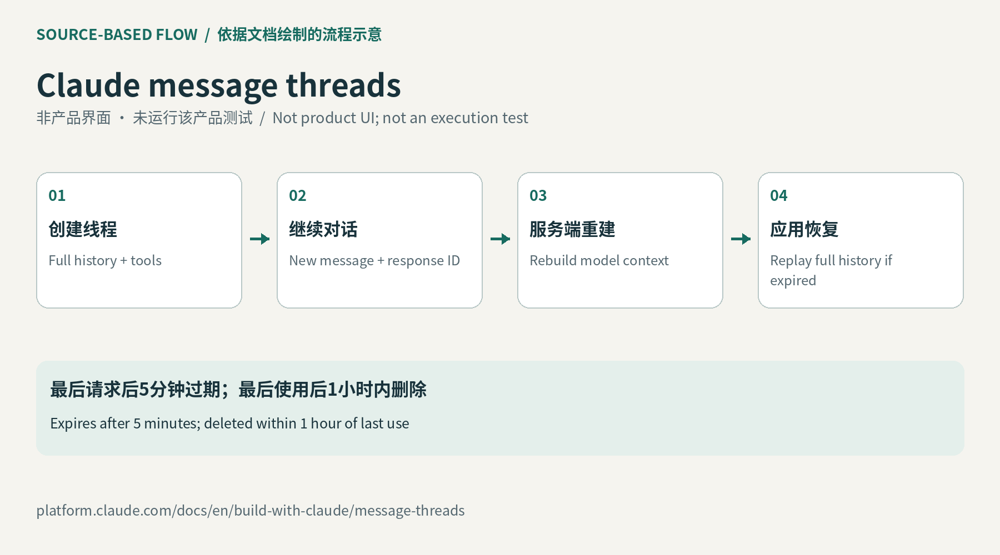

长历史不必每轮重复上传
普通Messages调用由应用组织对话历史，再把所需消息交给模型。线程改变的是传输和服务端重建方式：完整对话只在创建时发送，后续新增消息带上上一条回复的标识。开发者可以用它连接连续的用户问答或工具结果，减少越来越大的请求体。较短请求尤其适合轮次密集的任务；如果用户每隔很久才回复，服务器状态常常已经失效，收益可能不同。这个变化没有让模型获得无限记忆，应用仍需决定哪些资料属于当前任务。
Claude message threads · API测试版

普通Messages调用由应用组织对话历史，再把所需消息交给模型。线程改变的是传输和服务端重建方式：完整对话只在创建时发送，后续新增消息带上上一条回复的标识。开发者可以用它连接连续的用户问答或工具结果，减少越来越大的请求体。较短请求尤其适合轮次密集的任务；如果用户每隔很久才回复，服务器状态常常已经失效，收益可能不同。这个变化没有让模型获得无限记忆，应用仍需决定哪些资料属于当前任务。
官方发布说明明确区分两个时间：最后一次请求后五分钟线程到期，最后使用后不超过一小时删除。客户端不能把这段保留当成会话数据库；完整记录仍由自己的应用维护。线程无法继续时，需要以完整历史重新创建，再使用新的回复标识。设计上的重点是让恢复路径和正常路径使用同一份可靠记录，避免一个后台任务继续了旧分支，而界面展示另一个分支。本次未执行请求，因此没有把“更快首字返回”的厂商描述写成固定幅度或保证。
提示缓存另有独立入口，通过顶层或内容块上的cache_control选择要缓存的前缀。自动缓存会把断点随对话推进，显式断点则由应用指定。线程与缓存可以组合，但不能仅因为网络请求变短，就假定所有输入都变成缓存命中。评估时应分开观察上传字节、首字等待和实际用量记录；它们解决的瓶颈并不完全一样。尤其是长文档问答，用户看到的等待可能还包括检索和工具执行，不能把整个任务的耗时都归因于请求传输。
SDK线程助手把完整历史留在对象内存里，并协助创建、继续和重放；若要跨进程保留会话，开发者仍需自己的存储。文档还把系统提示与工具放在创建阶段，改变固定字段时要重新建线程，说明线程适合追加式交互，而不是任意改写已经发送的历史。测试版覆盖Claude API、Claude Platform on AWS、Anthropic托管的Google Cloud和Microsoft Foundry。数据处理标签显示它不符合ZDR与HIPAA资格。选择时应把短时服务端保留、应用存储和所用云入口一并核对。